Round 16: the plan's name on its cards
Sebastian asked for every plan to carry a short name beside its number, so a glance at the board shows which cards belong to which plan. The plan chip that already exists carries the name, so no new chip, colour or class was added. This is a build in the lab, not an image round: the shots are the console itself, served over the lab's fakes. The pick is Sebastian's, against these shots. The entry is C40. The same build removes the verdict survey from the escalation card (C41).
Before is the base commit with the same lab cards and no names. After is the build. The crops are magnified 2x and cut from the same region where the layout allows. Otherwise they show the same element.
The board at 1440, dark
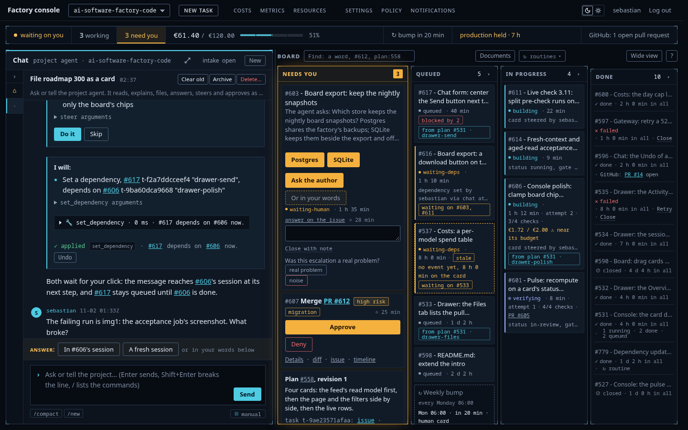
from plan #531 · drawer-send, the card's key. The plan's Done row has no chip.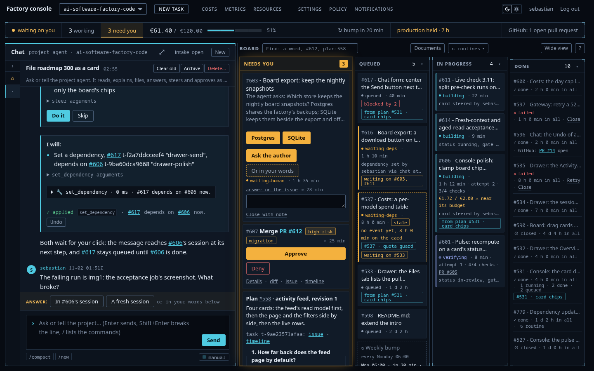
from plan #531 · card chips on #617, #533 and #606, and #531 · card chips on the plan's Done row.The board at 1440, light
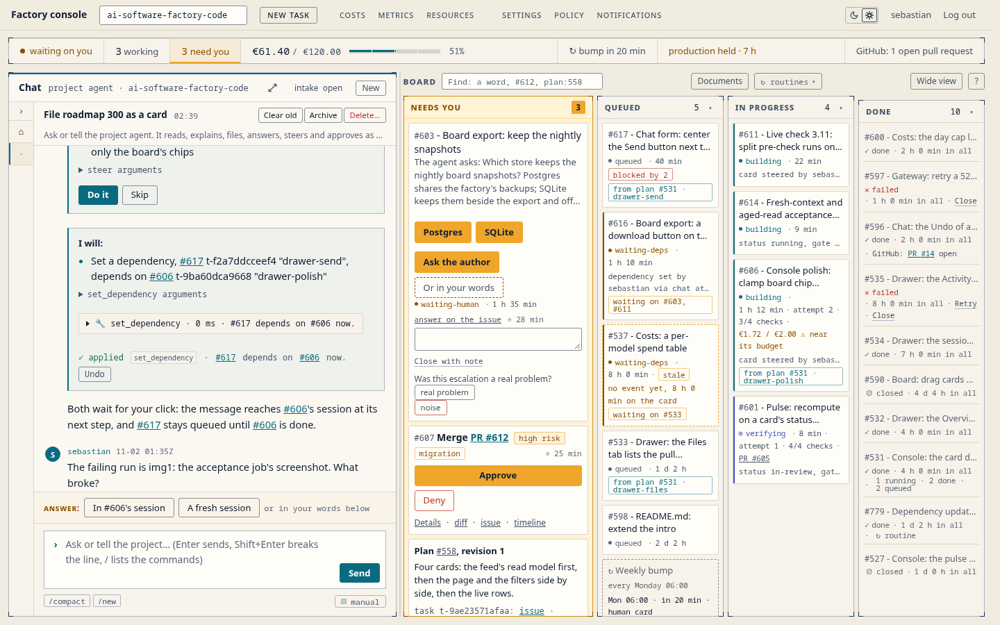
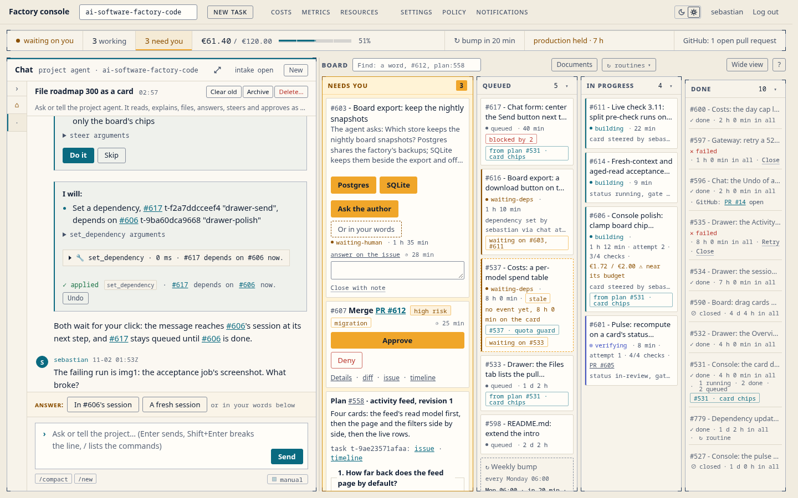
A child card's chip
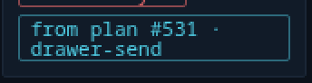
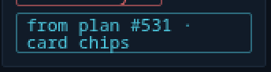
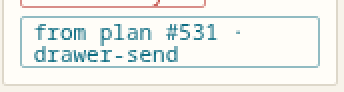
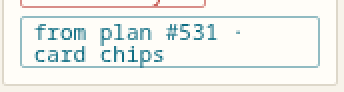
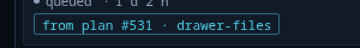
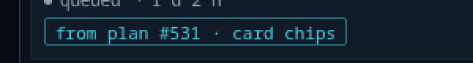
The plan's Done row
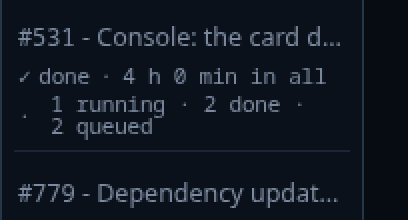
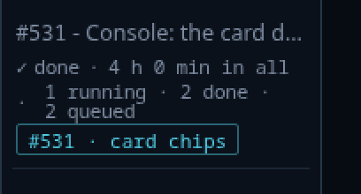
#531 · card chips under the counts.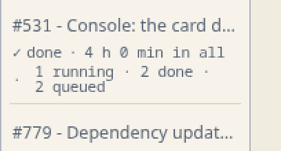
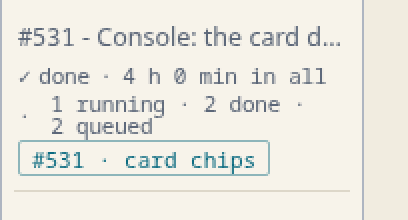
A live plan card
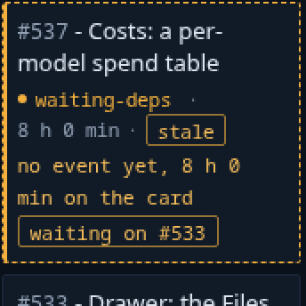
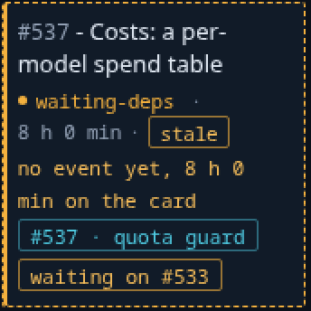
#537 · quota guard.The plan approval's header
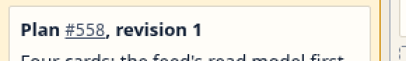
Plan #558, revision 1.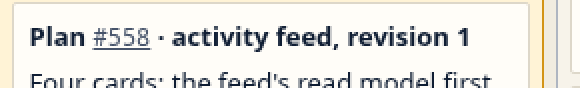
Plan #558 · activity feed, revision 1.The drawer's Plan row
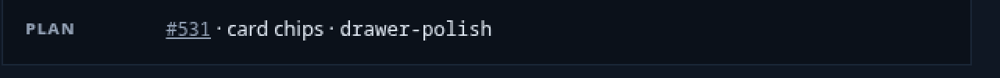
#531 · card chips · drawer-polish, the number linked, the key in monospace. It replaces the collapsed "The plan" section on a child card.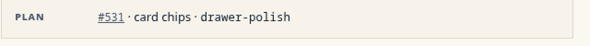
The escalation card without the verdict survey (C41)
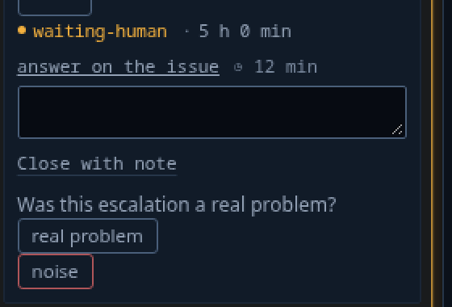
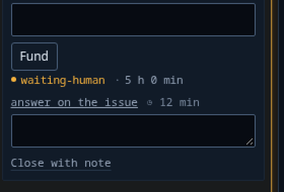
The phone
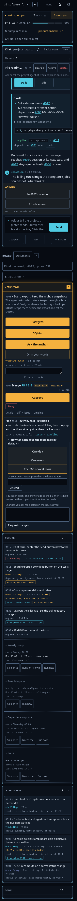